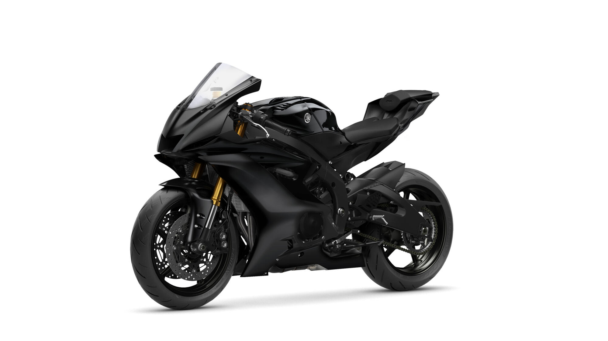
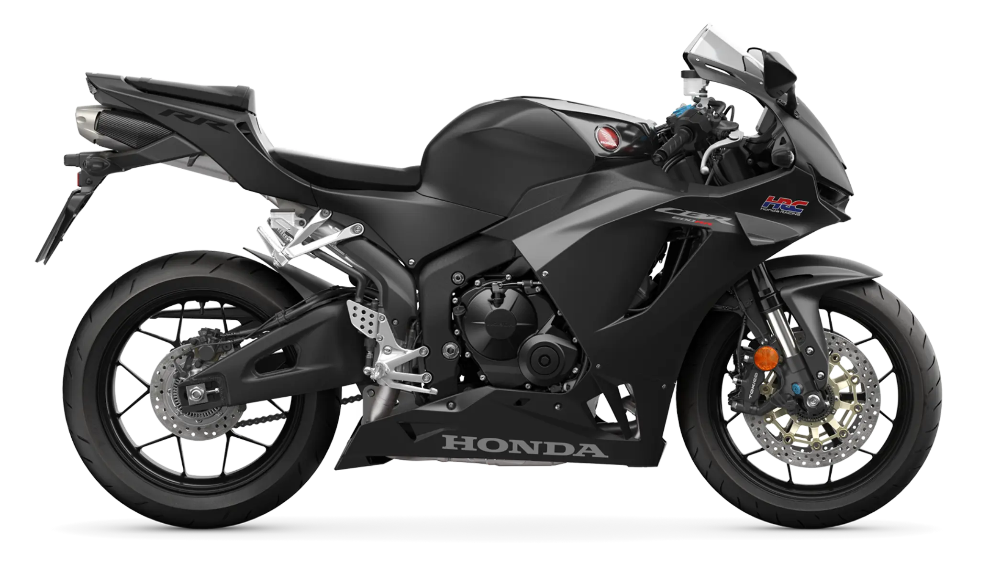
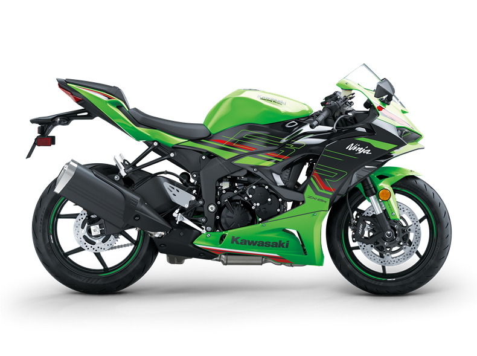

MOTOS 600cc
Las motocicletas de 600cc son una de las opciones más atractivas para aquellos que buscan el equilibrio entre el paso por curva, la ligereza y la potencia.
Para poder llevar motos de esta cilindrada tendremos dos opciones: por un lado podremos limitar su potecia para el carnet A2 que se puede obtener a los 18 años de edad, o comprarlas y conducirlas deslimitadas ya con el permiso A que se obtiene tras el A2 a los 20 años.
Como opción alternativa a las dos anteriores se podrá limitar la moto para el carnet de tipo A2 y deslimitarla posteriormente con la optención del carnet de tipo A.
MOTOS DE ESTILO DEPORTIVO
Las favoritas de entre su cilindrada son las que más abundan, estas se caracterizan por un comportamiento nervioso a altas vueltas y por un par motor más bien escaso en bajas.
A continuación algunas de las mejores opciones en este segmento.
1. YAMAJA R6 RACE
Como siempre yamaha entra en el top con una de sus motos más atractivas. El caracter deportivo de esta moto se aprecia en toda su figura, en su carenado deportivo y en su motor de 599cc y 4 cilindros con cárter húmedo del que hablaremos más adelante.
Volviendo al motor de la motocicleta, este produce unos más que respetables 118,4cv a 14.500rpm y 61,7Nm de par a 10.500rpm. El motor se encuentra acoplado a un embrague húmedo multidisco que lo conecta con un camcio de marchas de seis relaciones.
Hablando ahora del parte ciclo, esta moto equipa una suspensión delantera de horquilla con un recorrido de 120mm y una anchura de 43mm, además de la suspensión trasera de tipo eslabón con brazo hoscilante y otros 120mm que conectan las ruedas de 17 pulgadas de radio con el chasis de tipo diamante. Por otra parte cuenta en el apartado de frenada con un doble disco de freno de 320mm delante sugeto por pinzas hidráulicas y 220mm detrás sugeto de igual forma por pinzas hidráulicas.
Algunas medidas que podrían resultar útiles a la hora de elegir la moto se escriben a continuación: la altura del asiento es de 850mm, el depósito de combustible puede albergar 17l y el peso en orden de marcha es de 185kg (con fluidos incluidos)
2. HONDA CBR600RR 2024
Otro clásico japones que no pasa de moda, esta junto con la yamaha y la kawasaki son las principales opciones de compra para un interesado en las motos de caracter deportivo de 600cc.
Hablemos de numeritos, y es que el motor tetracilindrico de 599cc que equipa esta motocicleta produce unos maravillosos 121cv a 14.250rpm acompañados de 63Nm que genera a las 11.500rpm lo que la hace una opción tal vez más atractiva que la yamaha, pero que tiene el clásico problema de las 600cc deportivas que veníamos comentando, la falta de par motor a bajas vueltas.
En cualquier caso y continuando con el análisis de ka transmisión el motor está conectado a una caja manual de seis relaciones a través de un embrague húmedo multidisco bañado en aceite. Además existe la opción de añadirle al cambio el quickshifter que nos permite cambiar de marchas sin embrague. Por último mencionar que la transmisión final es de cadena (como en la yamaha).
Habiendo tocado ya el tema de transmisión y motor pasemos al parte ciclo, y es que esta moto equipa una suspensión delantera de horquilla invertida con un recorrido de 120mm pero con una anchura de 41mm, lo que la hace ligeramente más estrecha a la de la yamaha. Por otra parte la suspensión trasera cuennta con un amortiguador ajustable con articulación de 128mm de recorrido, todo esto para unir las llantas de 17 pulgadas de radio con el bastidor de doble viga de aluminio. En el apartado de frenada estaríamos hablando de un disco de 310mm con pinzas de cuatro pistones y anclaje radial delante y otro disco de 220mm con un solo pistón detrás, lo que la hace sobre el papel algo peor que la yamaha en cuanto a frenada.
Por último como con la yamaha pondré a continuación las medidas más típicas para elegir la moto a continuación: tiene una capacidad de combustible en el tanque de 18l, pesa unos 193kg en orden de marcha y la altura de su asiento al suelo es de 820mm lo que la hace más accesible para pilotos de baja estatura.
3. KAWASAKI NINJA ZX-6R
La última de nuestra lista de hoy es tal vez una de las favoritas dentro de su segmento gracias a la enorme reputación del la firma nipona en cuanto a crear auténticas bestias del rendimiento deportivo.
Empecemos como hemos venido haciendo hasta ahora con el motor, y es que esta motocicleta en concreto es capaz de producir con su motor de 636cc y cuatro cilindros una potencia de 124cv a 13.00rpm que pueden ascender a 129cv con RAM air. A esto se le une un par motor de 69Nm que genera a 10.800rpm. Este motor algo más gramde que el de sus competidores esta acoplado mediante un embrague húmedo multidisco a una caja manual de seis relaciones. La transmisión final es de cadena sellada.
Sigamos con el parte ciclo, que en esta moto está compuesto por una suspensión delantera de horquilla invertida con precarga ajustable, una anchura de 41mm y un recorrido de 120mm. Mientras tanto la suspensión trasera está compuesta por un amortiguador de gas con precarga ajustable con un recorrido de 151mm lo que le da la posibilidad de ser la más comoda para daily de las tres. Ambas suspensiones unen las llantas de 17 pulgadas de radio con el bastidor de tipo perimetral de aluminio. En el apartado de frenada nos econtramos con doble disco de 310mm delante modido por pinzas radiales de cuatro pistones y con un disco de 220mm mordido por una piza con un único piston.
Algunas medidas de interés para el interesado en esta motocicleta podrían ser: la altura del asiento con respecto al suelo de 830mm a medio camino entre la Yamaha y la Honda, la capacidad del combustible de 17l en el tanque y el peso en orden de marcha de 198kg, lo que la combierte en la más pesada de las tres.
COCLUSIÓN:
En vista de la similitud entre las tres motos algunos de los puntos clave a la hora de elegir a tu compañera serán además de tu gusto personal el precio de la montura, así pues a continuación se ponen las cifras correspondientes a cada modelo:
Yamaha R6 RACE: 14.099'00
Honda CBR600RR 2024: 12.700'00
Kawasaki NINJA ZX-6R: 13.199'00
Cumpliendo con la regla como casi siempre la más cara sería en este caso la Yamaha, seguida por la Kawasaki y dejando a la Honda como la opción más económica y como la que en mi opinión ofrece la mejor relación precio equipamiento.